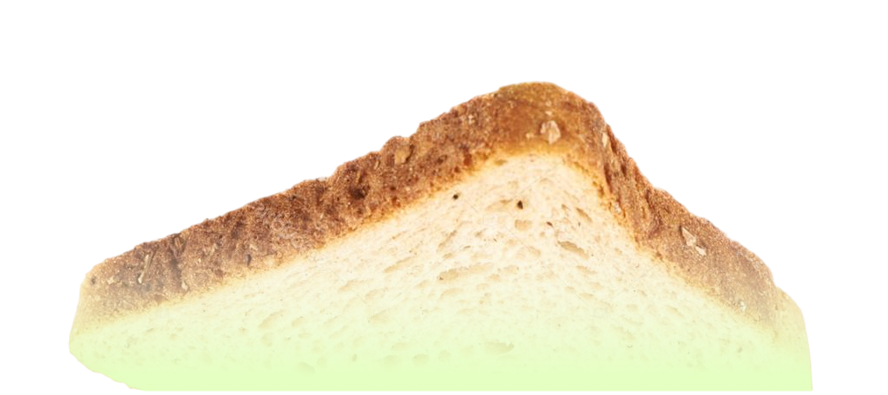
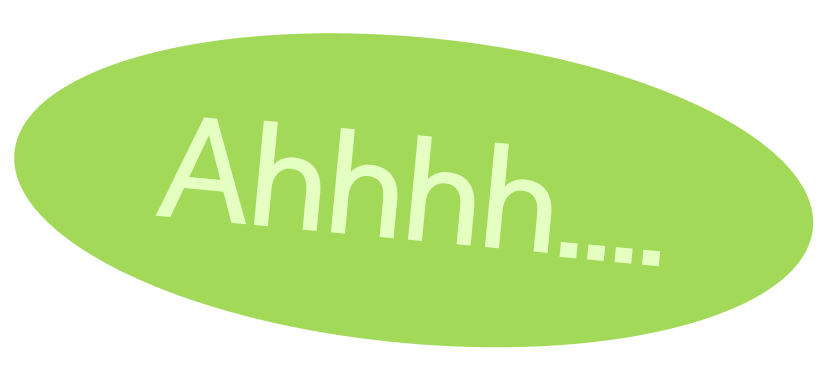
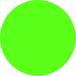

점점 뚱뚱해지는 샌드위치에 관한 이야기







이렇게 생긴 뚱뚱한 샌드위치는 우리에게 이미 익숙해진 존재이기도 하다.


"이건... 샌드가 아니라..."

"하마가 될 수 있는 새로운 도구!?"


응애~~
지금과는 조금 달랐습니다. 18세기 영국에서 탄생한 샌드위치는 빠르게 식사를 해결하기 위한 음식이었다.

18세기 영국, 한 백작이 카드놀이를 하다가 식사 시간을 아끼기 위해 빵과 빵 사이에 고기를 끼워 먹기 시작했다. 그것이 바로 샌드위치의 시작이었다.
한 손으로 먹을 수 있다
자리를 비우지 않고 먹을 수 있다
빵이 손을 더럽히지 않게 막아준다
무엇보다, 빠르게 먹을 수 있다
그리고 이 간편한 음식은 바다를 건너 우리나라에도 도착하게 되었다.
길거리 토스트는 네모난 식빵 두 장,그 사이엔 계란, 양배추, 햄, 그리고 설탕 한 줌으로 길거리 사람들의 허기를 채워 주었다.

케첩과 설탕이 더해진 손가락 두세 마디 정도 높이의 투박한 단면은 한 손으로 쥐고 한 입에 베어 물기 딱 좋은 두께였다.
하지만 시간이 흐르고, 샌드는 조금씩... 두꺼워지기 시작했다.
화면 속에서 사람들은 엄청난 양의 음식을 먹기 시작했다. 보는 사람도, 먹는 사람도 비주얼에 더 집중하게 되었다. 이때부터 였을까? 샌드는 반으로 잘려 단면으로 승부를 보기 시작했다.


내용
내용
SNS가 일상이 된 시대,
음식은 먹기 전에 먼저 사진이 됩니다.
올리기 좋은 음식, 잘라봤을 때 예쁜 음식,
단면이 화려한 음식.
일본에서 시작된 후르츠 산도는
그 변화를 가장 잘 보여줍니다.
먹기 위해 만든 음식이
보여주기 위한 음식으로도 변하기 시작한 것입니다.
잘린 단면의 과일 배열, 흘러내리는 생크림.
한 입 크기보다 한 컷 크기가 더 중요해졌습니다.

재료도 점점 많아졌습니다.
크림은 더 두꺼워지고, 과일은 더 커지고, 단면은 더 화려해졌습니다.
샌드위치의 변화는 단순한 음식 트렌드가 아닙니다.
그 안에는 시대의 취향이 고스란히 담겨 있습니다.
편리함을 원하던 시작부터,
가성비 있는 배부름을 원했던 시기
그리고 보여주기를 원하는 지금에 이르기
어느 시대가 궁금하다면,
빵과 빵 사이를 살펴보세요.